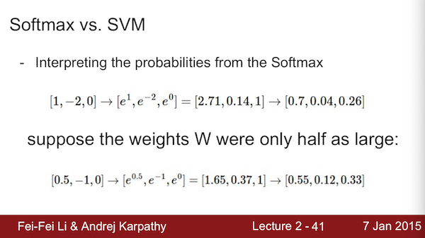
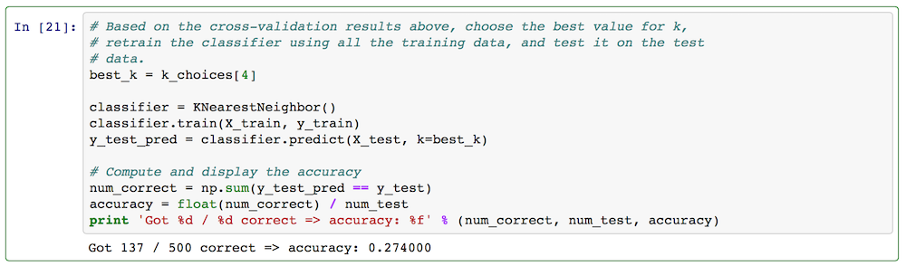
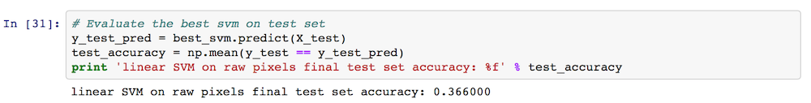
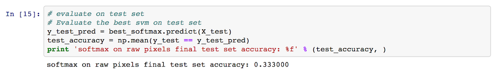

本文是stanford大学课程：Convolutional Neural Networks for Visual Recognition 的一些笔记与第一次作业。主要内容为简单（多类）分类器的实现：KNN, SVM, softmax。
softmax与SVM的一点区别，其中一张PPT说明： 
分类器实现的训练步骤三步走：
- 计算 score matrix
- 基于 score matrix 与真实标签计算代价函数cost function/ loss function
- 由cost function对分类器参数求导，计算最优参数 （KNN不需要）
KNN 分类器
KNN分类器封装为一个类，包括常规的函数__init__, train, predict以及一些别的重要函数。KNN不需要训练，因此train只是存下gallery数据和标签：
def train(self, X, y):
"""
Train the classifier. For k-nearest neighbors this is just
memorizing the training data.
Input:
X - A num_train x dimension array where each row is a training point.
y - A vector of length num_train, where y[i] is the label for X[i, :]
"""
self.X_train = X
self.y_train = y
对于KNN来说，预测分类，最主要的就是距离的定义与计算，得到一个距离矩阵或者称为得分矩阵score。然后根据score排序得到最相似的K个样本，采取某种策略由该K个样本的类别决定测试样本的标签。
def predict(self, X, k=1, num_loops=0):
"""
Predict labels for test data using this classifier.
Input:
X - A num_test x dimension array where each row is a test point.
k - The number of nearest neighbors that vote for predicted label
num_loops - Determines which method to use to compute distances
between training points and test points.
Output:
y - A vector of length num_test, where y[i] is the predicted label for the
test point X[i, :].
"""
if num_loops == 0:
dists = self.compute_distances_no_loops(X)
elif num_loops == 1:
dists = self.compute_distances_one_loop(X)
elif num_loops == 2:
dists = self.compute_distances_two_loops(X)
else:
raise ValueError('Invalid value %d for num_loops' % num_loops)
return self.predict_labels(dists, k=k)
其中predict_labels函数是由距离dists和k个近邻得到预测标签：
def predict_labels(self, dists, k=1):
"""
Given a matrix of distances between test points and training points,
predict a label for each test point.
Input:
dists - A num_test x num_train array where dists[i, j] gives the distance
between the ith test point and the jth training point.
Output:
y - A vector of length num_test where y[i] is the predicted label for the
ith test point.
"""
num_test = dists.shape[0]
y_pred = np.zeros(num_test)
for i in xrange(num_test):
# A list of length k storing the labels of the k nearest neighbors to
# the ith test point.
closest_y = []
#########################################################################
# TODO: #
# Use the distance matrix to find the k nearest neighbors of the ith #
# training point, and use self.y_train to find the labels of these #
# neighbors. Store these labels in closest_y. #
# Hint: Look up the function numpy.argsort. #
#########################################################################
idx = np.argsort(dists[i, :])
closest_y = list(self.y_train[idx[0:k]])
#########################################################################
# TODO: #
# Now that you have found the labels of the k nearest neighbors, you #
# need to find the most common label in the list closest_y of labels. #
# Store this label in y_pred[i]. Break ties by choosing the smaller #
# label. #
#########################################################################
labelCount = {}
for j in xrange(k):
labelCount[closest_y[j]] = labelCount.get(closest_y[j], 0) + 1
sortedLabel = sorted(labelCount.iteritems(), key = lambda line:line[1], reverse = True)
y_pred[i] = sortedLabel[0][0]
#########################################################################
# END OF YOUR CODE #
#########################################################################
return y_pred
再来说用到的距离的计算，这里采用欧氏距离来衡量测试样本X和gallery数据X_train。注意到X - An num_test x dimension array where each row is a test point. 最终的dists应该是num_test x num_train的矩阵，变换可以用下面一句代码得到。至此，KNN分类器完成。
dists = np.sqrt(np.dot((X**2), np.ones((np.transpose(self.X_train)).shape))\
+ np.dot(np.ones(X.shape), np.transpose(self.X_train ** 2))\
- 2 * np.dot(X, np.transpose(self.X_train)))
linear classifier
这里只考虑softmax和linear svm两种分类器，统一封装为一个类。需要补全 train 与 predict 两部分。
import numpy as np
from cs231n.classifiers.linear_svm import *
from cs231n.classifiers.softmax import *
class LinearClassifier:
def __init__(self):
self.W = None
def train(self, X, y, learning_rate=1e-3, reg=1e-5, num_iters=100,
batch_size=200, verbose=False):
"""
Train this linear classifier using stochastic gradient descent.
Inputs:
- X: D x N array of training data. Each training point is a D-dimensional
column.
- y: 1-dimensional array of length N with labels 0...K-1, for K classes.
- learning_rate: (float) learning rate for optimization.
- reg: (float) regularization strength.
- num_iters: (integer) number of steps to take when optimizing
- batch_size: (integer) number of training examples to use at each step.
- verbose: (boolean) If true, print progress during optimization.
Outputs:
A list containing the value of the loss function at each training iteration.
"""
dim, num_train = X.shape
num_classes = np.max(y) + 1 # assume y takes values 0...K-1 where K is number of classes
if self.W is None:
# lazily initialize W
self.W = np.random.randn(num_classes, dim) * 0.001
# Run stochastic gradient descent to optimize W
loss_history = []
for it in xrange(num_iters):
X_batch = None
y_batch = None
#########################################################################
# TODO: #
# Sample batch_size elements from the training data and their #
# corresponding labels to use in this round of gradient descent. #
# Store the data in X_batch and their corresponding labels in #
# y_batch; after sampling X_batch should have shape (dim, batch_size) #
# and y_batch should have shape (batch_size,) #
# #
# Hint: Use np.random.choice to generate indices. Sampling with #
# replacement is faster than sampling without replacement. #
#########################################################################
sample_idx = np.random.choice(num_train, batch_size, replace = True)
X_batch = X[:, sample_idx]
y_batch = y[sample_idx]
#########################################################################
# END OF YOUR CODE #
#########################################################################
# evaluate loss and gradient
loss, grad = self.loss(X_batch, y_batch, reg)
loss_history.append(loss)
# perform parameter update
#########################################################################
# TODO: #
# Update the weights using the gradient and the learning rate. #
#########################################################################
self.W += -learning_rate*grad
#########################################################################
# END OF YOUR CODE #
#########################################################################
if verbose and it % 100 == 0:
print 'iteration %d / %d: loss %f' % (it, num_iters, loss)
return loss_history
def predict(self, X):
"""
Use the trained weights of this linear classifier to predict labels for
data points.
Inputs:
- X: D x N array of training data. Each column is a D-dimensional point.
Returns:
- y_pred: Predicted labels for the data in X. y_pred is a 1-dimensional
array of length N, and each element is an integer giving the predicted
class.
"""
y_pred = np.zeros(X.shape[1])
###########################################################################
# TODO: #
# Implement this method. Store the predicted labels in y_pred. #
###########################################################################
y_pred = np.argmax(np.dot(self.W, X), axis = 0)
###########################################################################
# END OF YOUR CODE #
###########################################################################
return y_pred
def loss(self, X_batch, y_batch, reg):
"""
Compute the loss function and its derivative.
Subclasses will override this.
Inputs:
- X_batch: D x N array of data; each column is a data point.
- y_batch: 1-dimensional array of length N with labels 0...K-1, for K classes.
- reg: (float) regularization strength.
Returns: A tuple containing:
- loss as a single float
- gradient with respect to self.W; an array of the same shape as W
"""
pass
class LinearSVM(LinearClassifier):
""" A subclass that uses the Multiclass SVM loss function """
def loss(self, X_batch, y_batch, reg):
return svm_loss_vectorized(self.W, X_batch, y_batch, reg)
class Softmax(LinearClassifier):
""" A subclass that uses the Softmax + Cross-entropy loss function """
def loss(self, X_batch, y_batch, reg):
return softmax_loss_vectorized(self.W, X_batch, y_batch, reg)
这里面SVM和softmax是基于基类线性分类器的类，并分别定义了loss函数。
SVM 的loss function 与 gradient ：
loss function: $$L = \frac{1}{N} \sum_i \sum_ {y_i \ne j} \max( 0, \mathrm{f}(\mathrm{x} _ {i}, W) _ {j} - \mathrm{f}(\mathrm{x} _ {i}, W) _ {y_i} + 1 ) + \frac{\lambda}{2} \sum_k\sum_l W _ {k,l}^2 $$
gradient: $$ \nabla _ {\mathrm{w} _ j} L = \frac{1}{N} \sum_i \mathrm{1} \{\mathrm{w} _ {j} ^ {T} \mathrm{x} _ i - w _ {y_i}^T \mathrm{x} _ i + 1>0 \}\mathrm{x}_i + \lambda \mathrm{w} _ j$$
根据公式很容易实现代码：
import numpy as np
from random import shuffle
def svm_loss_naive(W, X, y, reg):
"""
Structured SVM loss function, naive implementation (with loops)
Inputs:
- W: C x D array of weights
- X: D x N array of data. Data are D-dimensional columns
- y: 1-dimensional array of length N with labels 0...K-1, for K classes
- reg: (float) regularization strength
Returns:
a tuple of:
- loss as single float
- gradient with respect to weights W; an array of same shape as W
"""
dW = np.zeros(W.shape) # initialize the gradient as zero
# compute the loss and the gradient
num_classes = W.shape[0]
num_train = X.shape[1]
loss = 0.0
for i in xrange(num_train):
scores = W.dot(X[:, i])
correct_class_score = scores[y[i]]
for j in xrange(num_classes):
if j == y[i]:
continue
margin = scores[j] - correct_class_score + 1 # note delta = 1
if margin > 0:
loss += margin
dW[j, :] += (X[:, i]).transpose()
# Right now the loss is a sum over all training examples, but we want it
# to be an average instead so we divide by num_train.
loss /= num_train
dW /= num_train
# Add regularization to the loss.
loss += 0.5 * reg * np.sum(W * W)
dW += reg * W
#############################################################################
# TODO: #
# Compute the gradient of the loss function and store it dW. #
# Rather that first computing the loss and then computing the derivative, #
# it may be simpler to compute the derivative at the same time that the #
# loss is being computed. As a result you may need to modify some of the #
# code above to compute the gradient. #
#############################################################################
return loss, dW
def svm_loss_vectorized(W, X, y, reg):
"""
Structured SVM loss function, vectorized implementation.
Inputs and outputs are the same as svm_loss_naive.
"""
loss = 0.0
dW = np.zeros(W.shape) # initialize the gradient as zero
#############################################################################
# TODO: #
# Implement a vectorized version of the structured SVM loss, storing the #
# result in loss. #
#############################################################################
num_train = y.shape[0]
Y_hat = W.dot(X)
err_dist = Y_hat - Y_hat[tuple([y, range(num_train)])] + 1
err_dist[err_dist <= 0] = 0.0
err_dist[tuple([y, range(num_train)])] = 0.0
loss += np.sum(err_dist)/num_train
loss += 0.5 * reg * np.sum(W * W)
#############################################################################
# END OF YOUR CODE #
#############################################################################
#############################################################################
# TODO: #
# Implement a vectorized version of the gradient for the structured SVM #
# loss, storing the result in dW. #
# #
# Hint: Instead of computing the gradient from scratch, it may be easier #
# to reuse some of the intermediate values that you used to compute the #
# loss. #
#############################################################################
err_dist[err_dist>0] = 1.0/num_train
dW += err_dist.dot(X.transpose()) + reg * W
#############################################################################
# END OF YOUR CODE #
#############################################################################
return loss, dW
softmax的loss function 与 gradient ：
loss function: $$ L = \frac {1}{N} \sum_i \sum_j \mathrm{1}\{y_i=j \}\cdot \log(\frac{e^{\mathrm{f} _ j}}{\sum_m e^{\mathrm{f} _ m}}) + \frac{\lambda}{2} \sum_k\sum_l W _ {k,l}^2$$
gradient: $$\nabla_{\mathrm{w} _ j} L = -\frac{1}{N} \sum_i \left[\mathrm{1} \{y_i=j\} - p(y_i=j|\mathrm{x} _ i;W)\right]\mathrm{x} _ i + \lambda \mathrm{w} _ j$$
其中 $$ p(y_i=j | \mathrm{x} _ {i}; W) = \frac{e^{\mathrm{f} _ j}} {\sum_m e^{\mathrm{f} _ m}}$$
import numpy as np
from random import shuffle
def softmax_loss_naive(W, X, y, reg):
"""
Softmax loss function, naive implementation (with loops)
Inputs:
- W: C x D array of weights
- X: D x N array of data. Data are D-dimensional columns
- y: 1-dimensional array of length N with labels 0...K-1, for K classes
- reg: (float) regularization strength
Returns:
a tuple of:
- loss as single float
- gradient with respect to weights W, an array of same size as W
"""
# Initialize the loss and gradient to zero.
loss = 0.0
dW = np.zeros_like(W)
#############################################################################
# TODO: Compute the softmax loss and its gradient using explicit loops. #
# Store the loss in loss and the gradient in dW. If you are not careful #
# here, it is easy to run into numeric instability. Don't forget the #
# regularization! #
#############################################################################
dim, num_data = X.shape
num_class = W.shape[0]
Y_hat = np.exp(np.dot(W, X))
prob = Y_hat / np.sum(Y_hat, axis = 0)
# C x N array, element(i,j)=1 if y[j]=i
ground_truth = np.zeros_like(prob)
ground_truth[tuple([y, range(len(y))])] = 1.0
for i in xrange(num_data):
for j in xrange(num_class):
loss += -(ground_truth[j, i] * np.log(prob[j, i]))/num_data
dW[j, :] += -(ground_truth[j, i] - prob[j, i])*(X[:,i]).transpose()/num_data
loss += 0.5*reg*np.sum(np.sum(W**2, axis = 0)) # reg term
dW += reg*W
#############################################################################
# END OF YOUR CODE #
#############################################################################
return loss, dW
def softmax_loss_vectorized(W, X, y, reg):
"""
Softmax loss function, vectorized version.
Inputs and outputs are the same as softmax_loss_naive.
"""
# Initialize the loss and gradient to zero.
loss = 0.0
dW = np.zeros_like(W)
#############################################################################
# TODO: Compute the softmax loss and its gradient using no explicit loops. #
# Store the loss in loss and the gradient in dW. If you are not careful #
# here, it is easy to run into numeric instability. Don't forget the #
# regularization! #
#############################################################################
dim, num_data = X.shape
Y_hat = np.exp(np.dot(W, X))
prob = Y_hat / np.sum(Y_hat, axis = 0)#probabilities
# C x N array, element(i,j)=1 if y[j]=i
ground_truth = np.zeros_like(prob)
ground_truth[tuple([y, range(len(y))])] = 1.0
loss = -np.sum(ground_truth*np.log(prob)) / num_data + 0.5*reg*np.sum(W*W)
dW = (-np.dot(ground_truth - prob, X.transpose()))/num_data + reg*W
#############################################################################
# END OF YOUR CODE #
#############################################################################
return loss, dW
在相应ipython notebook上运行，测试三种分类器效果： KNN的测试结果（K=10）： 
SVM测试结果： 
Softmax测试结果： 